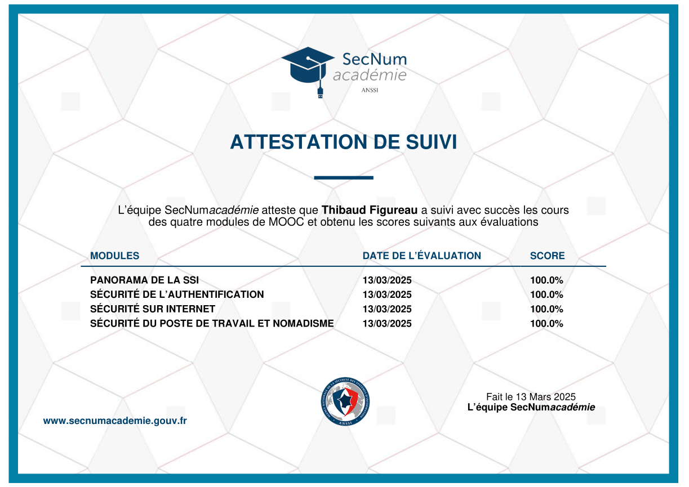

Présentation
2éme année de BTS SIO
actuellement étudiant en BTS SIO option SISR a l'Institut Informatique Appliqué de Saint-Nazaire, vous retrouverez ci-dessous mon CV ainsi que mes différents projets.
Mon parcours
Mes expériences Professionnelles et Scolaires
Mes compétences
Tableau résumant mes compétences acquises en informatique sur la durée de formation
{kind=link}
{kind=link}
{kind=link}
{kind=link}
{kind=link}
{kind=link}
{kind=link}
Mes compétences développement et réseaux

HTML / CSS
Je sais utiliser les languages HTML et CSS

Bash
J'utilise le language Bash de manière journalière et explore tout ses aspects

PowerShell
Je maitrise quelques bases et concepts en PowerShell par le biais de mon BTS SIO

Git
J'utilise Git notamment pour ce projet de Portfolio.
Mes outils / logiciel

Burpsuite
J'ai appris à utiliser l'outil Burpsuite personellement.

GitHub
J'utilise GitHub pour différents projets notamment pour ce Portfolio.

certification ANSSI
Notions sur la sécurité du système d’information et sur le traitement des données.